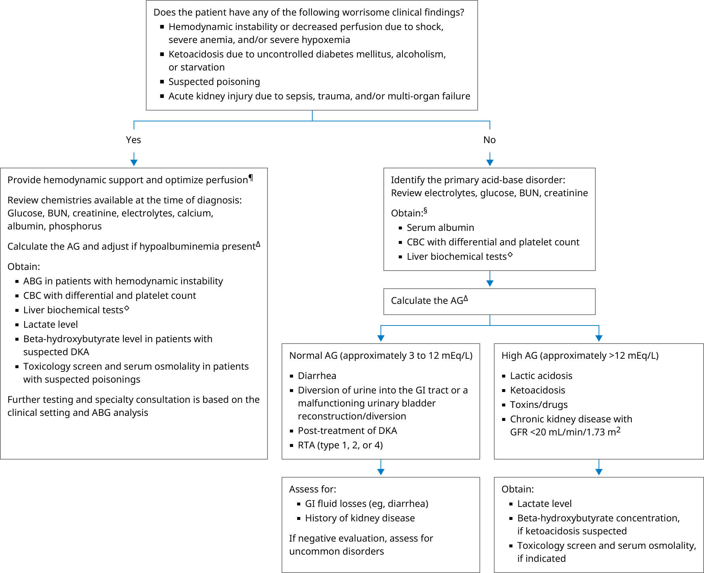

ABG: arterial blood gas; AG: anion gap; BUN: blood urea nitrogen; CBC: complete blood count; Cl: chloride; DKA: diabetic ketoacidosis; GFR: glomerular filtration rate; GI: gastrointestinal; HCO3: bicarbonate; Na: sodium; RTA: renal tubular acidosis.
* The normal reference range for serum HCO3 is approximately 23 to 28 mEq/L, although low serum HCO3 is often defined as <22 mEq/L. Interpretation of a specific abnormal result should be based upon the reference range reported with that result.
¶ Life-saving interventions should not be delayed while awaiting the results of diagnostic testing.
Δ AG (mEq/L) = Na – (Cl + HCO3). Adjust the AG if hypoalbuminemia is present (albumin-adjusted AG = AG + [2.5 × (4 – albumin in g/dL)]).
◊ Liver biochemical tests include alanine aminotransferase (ALT), aspartate aminotransferase (AST), and bilirubin.
§ Consider ABG analysis if the history, physical examination, and chemistries do not suggest a simple acid-base disorder or if clinical deterioration.